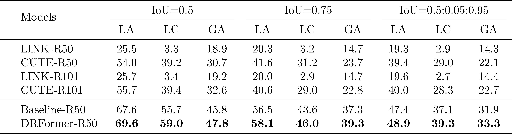
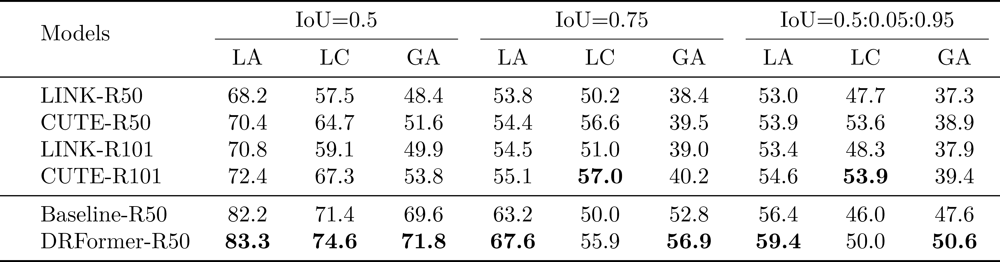
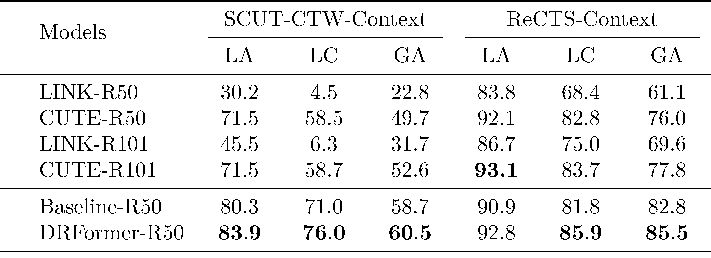
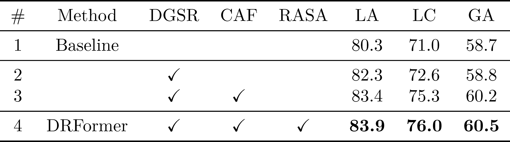
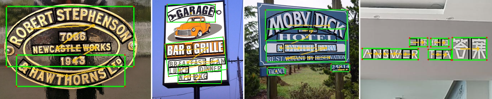
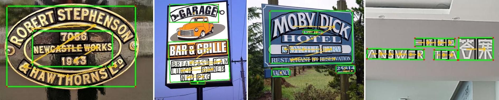

Contextual Text Block Detection (CTBD) is the task of identifying coherent text blocks within the complexity of natural scenes. Previous methodologies have treated CTBD as either a visual relation extraction challenge within computer vision or as a sequence modeling problem from the perspective of natural language processing. We introduce a new framework that frames CTBD as a graph generation problem. This methodology consists of two essential procedures: identifying individual text units as graph nodes and discerning the sequential reading order relationships among these units as graph edges. Leveraging the cutting-edge capabilities of DQ-DETR for node detection, our framework innovates further by integrating a novel mechanism, a Dynamic Relation Transformer (DRFormer), dedicated to edge generation. DRFormer incorporates a dual interactive transformer decoder that deftly manages a dynamic graph structure refinement process. Through this iterative process, the model systematically enhances the graph's fidelity, ultimately resulting in improved precision in detecting contextual text blocks. Comprehensive experimental evaluations conducted on both SCUT-CTW-Context and ReCTS-Context datasets substantiate that our method achieves state-of-the-art results, underscoring the effectiveness and potential of our graph generation framework in advancing the field of CTBD.







@inproceedings{wang2024dynamic,
title = {Dynamic Relation Transformer for Contextual Text Block Detection},
author = {Wang, Jiawei and Zhang, Shunchi and Hu, Kai and Ma, Chixiang and Zhong, Zhuoyao and Sun, Lei and Huo, Qiang},
booktitle = {International Conference on Document Analysis and Recognition},
year = {2024},
organization = {Springer}
}